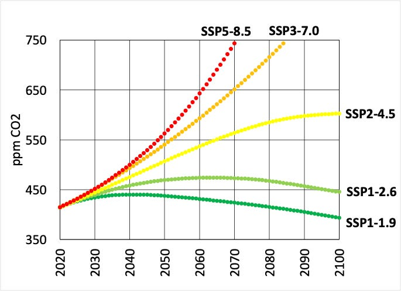
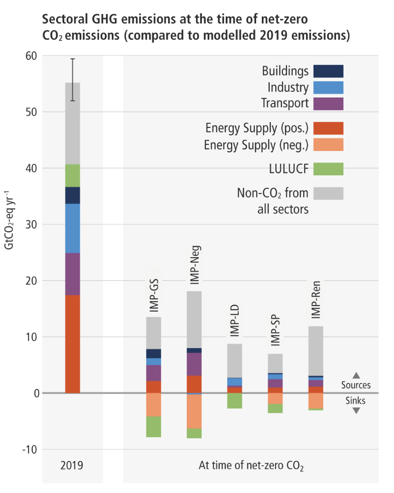

You can read Healing for free, and you can reach me directly by replying to this email.
If someone forwarded you this email, they’re asking you to sign up. You can do that below.
If you
really
want to help spread the word, then pay for the otherwise free subscription. I use any money I collect to increase readership through Facebook and LinkedIn ads.
Today’s read: 7 minutes.
“My question is: Why haven't we unleashed their [GM’s] potential? The answer is: the General Motors system. It's like a blanket of fog that keeps these people from doing what they know needs to be done. I come from an environment where, if you see a snake, you kill it. At GM, if you see a snake, the first thing you do is go hire a consultant on snakes. Then you get a committee on snakes, and then you discuss it for a couple of years. The most likely course of action is -- nothing. You figure, the snake hasn't bitten anybody yet, so you just let him crawl around on the factory floor. We need to build an environment where the first guy who sees the snake kills it.”—H. Ross Perot, as quoted in Fortune Magazine (1988). At that time, future Presidential Candidate Perot was in a public spat with GM’s CEO Roger Smith (who closed the 1984 acquisition of Perot’s company, Electronic Data Systems). Smith was later made (in)famous in Michael Moore’s debut documentary, “Roger & Me”.
Sound familiar?
Of course, Smith and GM were snakebitten at different times and for various reasons, but the point resonates. Note that the IPCC was established in 1988, and the snake of CO2 has grown steadily since then.
I decided to return to the full WG III report (weighing 2,913 pages) and see what other nuggets I could extract. The first section, the “Summary for Policy Makers,” is a rollup of narrower conclusions and is divided into five parts:
A. Introduction and framing
B. Recent developments and current trends
C. System transformations to limit global warming
D. Strengthening the response
E. Linkages between mitigation, adaptation, and sustainable development
I covered the first claim of “Recent Developments” in the first installment, so I thought I’d summarize the rest of the high-level conclusions (which I’ve condensed for brevity—if you’re a detail person, please read the damned report):
1. GHGs are increasing, but their growth rate is slowing (
TRUE & FALSE
)
See the last issue
1
. The growth rate is unchanged.
2. Emissions reductions were smaller than emissions increases (
TRUE
)
That’s the mathematical definition of “net growth”.
3. 18 countries have reduced GHG emissions for > 10 years (
Which 18?
)
This assertion led me down a fascinating rabbit hole. While the number “18” is cited several times in the report, the countries aren’t named. I think it refers to this statement (from paragraph B.5.1, p. SPM-14 of the document):
At least 18 countries that had Kyoto targets for the first commitment period have had sustained absolute emission reductions for at least a decade from 2005, of which two were countries with economies in transition (
very high confidence
)
.
That’s a lot of qualifiers as to what’s measured and how. From
this site
, these “countries” are The European Union (15 countries that report as one), plus Bulgaria, Czech Republic, Estonia, Latvia, Liechtenstein, Lithuania, Monaco, Romania, Slovakia, Slovenia, Switzerland, United States, Canada, Hungary, Japan, Poland, & Croatia. A few of these are former USSR states that could’ve been “in transition”.
If you add up the CO2 reductions achieved by these countries from 2010 to 2019, they have indeed continued on a downward trajectory. (Even the US is complying, even though it never actually ratified the Kyoto Protocol.)
Let’s put the reductions in context, though. From the IEA database used in the last installment, the decreased emissions by these countries were
less than half of the increased emissions by one country alone:
China
.
4. Costs of renewable electric power are coming down. (
TRUE
)
The section claimed that “renewable energy” costs were shrinking but referred exclusively to electric power. I can’t say it too often: Electricity cannot be stored or transported over long distances. And, despite cost reductions, the use of these technologies is still only in the single-digit percentages of the total. Electrification will undoubtedly impact going forward, but the transition will slow as the world reaches economic and infrastructure limitations. There is a ceiling beyond which the equivalence between power and energy becomes unreasonable.
5. New policies have helped:
Avoid emissions that would otherwise have occurred (
Who knows?
), and
Increase investment in low-GHG technologies and infrastructure. (
TRUE
)
We can’t know what business-as-usual would have been without policy changes. Perhaps new technologies replaced older ones, but they may have added a new energy source without avoiding any emissions. Of course, we can’t do the experiment, so it’s a self-gratifying conclusion, and avoidance of emissions is a slippery slope (see this installment
2
). But it’s a no-brainer that policies favoring low-GHG technologies have increased investment in them.
6. Current agreements will fail to achieve the 1.5°C goal. (
TRUE
)
The Kyoto Protocol was negotiated in 1997 but not ratified until 2005, and actions by countries that agreed to reduce emissions were obliterated by one country that wasn’t: China.
7. Running existing power plants to their end of life will mean failure to achieve the 1.5°C goal as well (
TRUE
)
Power plants last a long time, and emissions come from their continued operation. The sacrificial act of stopping a working power plant might be plausible in advanced economies. But, it would require developing economies to write off significant capital expenditures in favor of intermittent power sources, raising rates and reducing reliability. That’s not going to happen everywhere. In reality, both China and India are constructing new coal-fired power plants because of the low fuel cost.
I think it’s safe to say that the 1.5°C goal is impractical, even with storage or long-distance transmission. While technologies for both are essential and in development, it is wishful thinking to expect them to be deployed fast enough and cheaply enough to make a difference.
The bottom line is that this section is a self-gratifying list of modest successes (some countries are heeding the IPCC’s earlier warnings and acting on them). But these successes are negligible in the face of systemic failure (no measurable effect on the primary contributor to global warming, CO2). Most of the “recent developments” appear to be intended to ratchet up political pressure on the international community to do more (good luck with that!). It’s no wonder that both China and Russia failed to participate in the last Conference of Parties (COP26), and many in this country are choosing to ignore or deny the warnings! There’s not much new, and no breakthroughs have happened, Science be damned.
It’s time to either militarize or disband the IPCC, and the former is unpalatable. The science is not progressing fast enough, and adding another 10,000 pages that nobody will read is a pointless exercise for all but the authors. Enough already. Thank them for the effort, and let the members spend their time devising solutions rather than describing problems. But perhaps I’m being too hasty…
Can Section C provide redemption?
Let’s look at the next section (Section C, “System transformations to limit global warming”) for some hard data to chew on.
In section C, “System transformations to limit global warming,” WG III starts with the
outputs
of models. In this installment, the five scenarios (“SSPs”) covered in the production of WG I metastasize into no fewer than twelve listed of 1,202 considered. The ones listed expand the already-aggressive SSP1-1.9 and SSP1-2.6 scenarios. I covered all five scenarios earlier
3
. What’s interesting about the two they’ve chosen to develop is that they’re the only two that
ever
show a reduction in CO2 (green lines below):

Instead of describing the peak of CO2
concentration
(which drives warming), WG III describes the peak of CO2
emissions
. [Concentration continues to rise even as emissions decrease, until about global “net-zero”.] And, in every case reported, they assume that humans everywhere will emit significantly less CO2 from 2025-2030 than from 2020-2025. Of course, it’s up to you to figure out if that’s realistic, but it would certainly require a dramatic worldwide shift.
But wait! There’s more! Within the thousand-plus member SSP1 “family” of scenarios, WG III then decided to choose five “illustrative mitigation pathways” (IMPs) within these two scenarios:
IMP-Ren: Greater emphasis on renewables.
IMP-Neg: Deployment of carbon dioxide removal
IMP-LD: Ensuring a high level of services and satisfying basic needs
IMP-GS: Slow mitigation followed by a subsequent gradual strengthening
IMP-SP: Shifting global pathways towards sustainable development

Aren’t computers awesome! They always give an answer without worrying about reality. So, this esteemed group
starts
from the assumption that we will stop intentionally burning geologic carbon for energy immediately! All five IMP scenarios show a steep drop in annual emissions by 2030, reaching net-zero toward the end of the century. Yes, we can, assuming everyone is reading from the same script and nothing changes over the next eight decades.